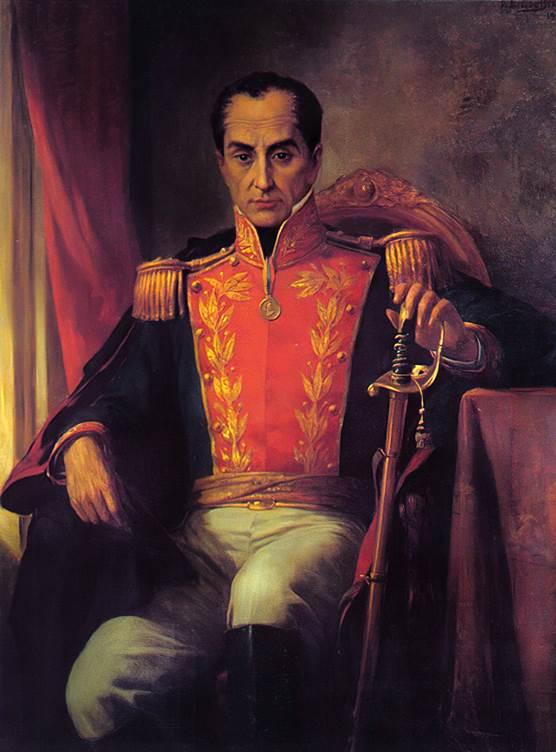
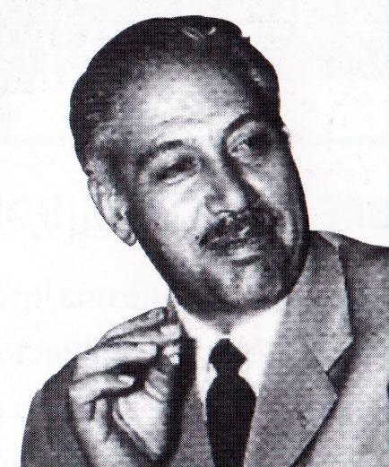
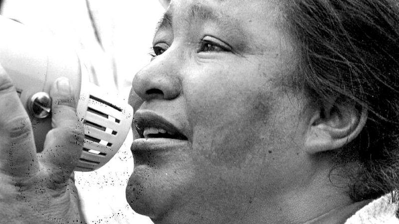
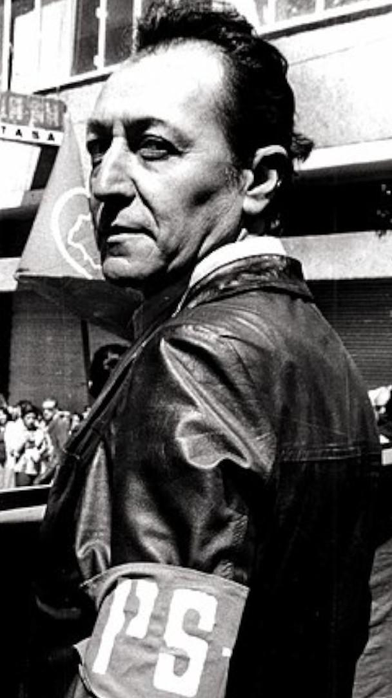
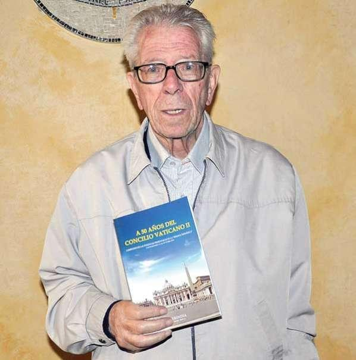
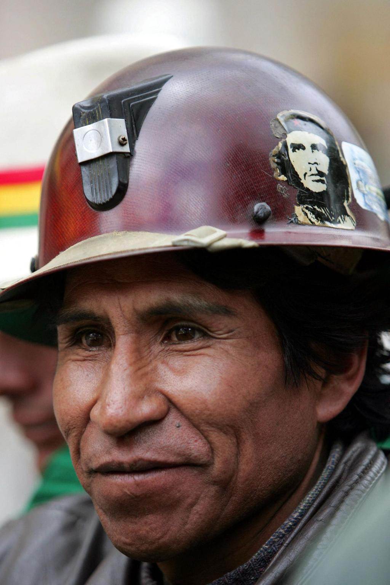

Historia: Fue el líder de la independencia de varios países de América del Sur.
Importancia: Inspiró ideas de libertad y justicia social.
Aportes: Sus ideales influyeron en futuros movimientos de derechos y trabajo digno.

Historia: Dirigente sindical y líder de los mineros bolivianos.
Importancia: Defendió a los trabajadores del sector minero.
Aportes: Impulsó sindicatos fuertes y derechos laborales en

Historia: Activista y líder de las esposas de mineros.
Importancia: Denunció la explotación y pobreza de los trabajadores.
Aportes: Representó la voz de las mujeres en la lucha laboral.

Historia: Político e intelectual boliviano.
Importancia: Defendió los derechos sociales y laborales.
Aportes: Promovió justicia social y lucha contra la corrupción.

Historia: Sacerdote y defensor de los derechos humanos.
Importancia: Apoyó a trabajadores pobres y marginados.
Aportes: Promovió justicia social y dignidad laboral.
Historia: Fue un dirigente sindical vinculado a la lucha de los trabajadores mineros en Bolivia.
Importancia: Representó las demandas de mejores condiciones de trabajo en las minas.
Aportes: Fortaleció la organización sindical y la defensa de derechos laborales en el sector minero..